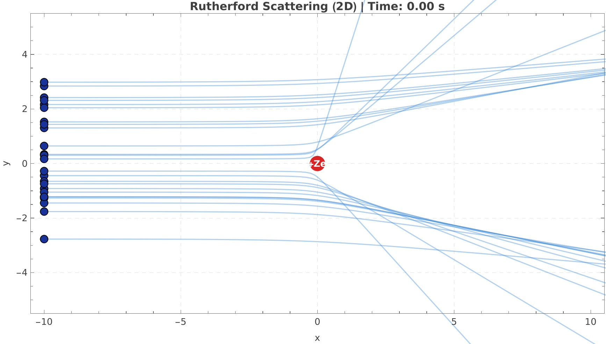
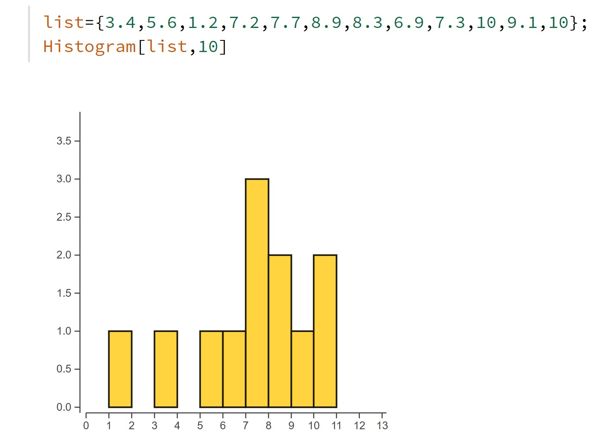

Capitolul 3
Până în 1897, savanții credeau că atomul este cea mai mică particulă a materiei. În 1897, fizicianul *J. J. Thomson* a descoperit electronul, o particulă subatomică cu sarcină negativă, mult mai ușoară decât atomul de hidrogen. El a propus modelul *„cozonacului cu stafide”*, în care electronii erau distribuiți într-o masă cu sarcină pozitivă.
În 1909, *Rutherford, împreună cu **Geiger și Marsden*, au realizat un experiment în care au bombardat o foiță foarte subțire de aur cu particule alfa. Se așteptau ca acestea să treacă aproape drept, conform modelului lui Thomson. Totuși, unele particule au fost deviate la unghiuri foarte mari, chiar de peste 90°.
Rutherford a concluzionat că atomul este format în mare parte din spațiu gol, iar *sarcina pozitivă și aproape toată masa sunt concentrate într-un nucleu foarte mic și dens, aflat în centrul atomului. Astfel, modelul lui Thomson a fost înlocuit de **modelul planetar al lui Rutherford*.

